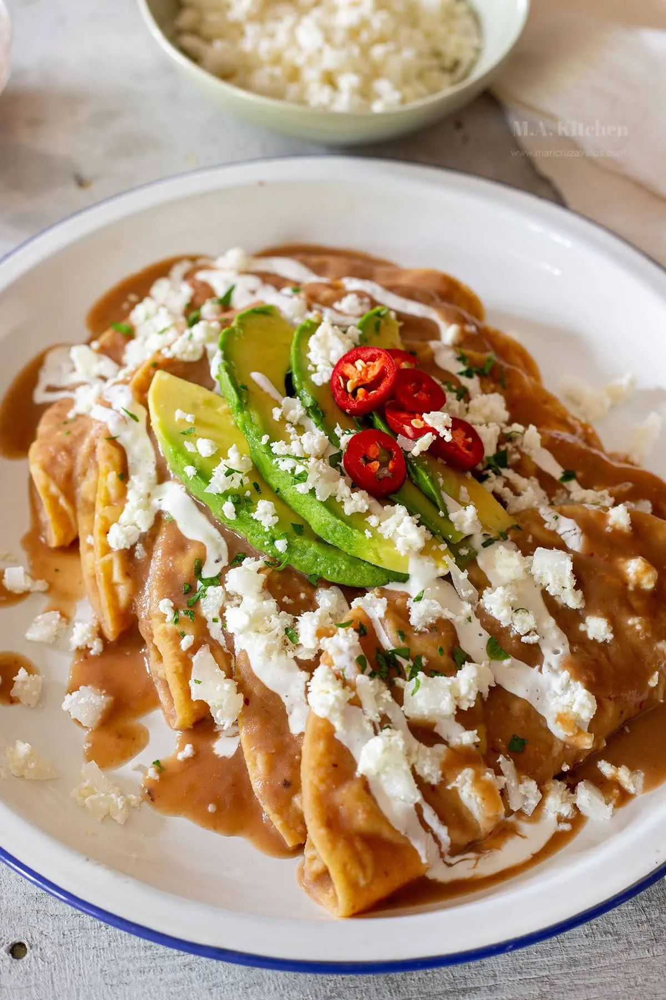

Enchiladas Suizas

Platillo elaborado con tortillas de maíz rellenas con pollo, bañadas con salsa verde y
gratinadas con queso manchego. La salsa verde se prepara con algo de ajonjolí y crema;
tradicionalmente se sirven tres con abundante salsa en un plato metálico o cualquier plato
hondo para gratinar. El adjetivo suizas se les aplica porque el platillo contiene crema y
mucho queso, y Suiza es famosa por sus quesos y productos lácteos. Estas enchiladas fueron
inventadas a principios del siglo XX en la famosa cadena de cafeterías Sanborns, cuya primera
tienda todavía está en la calle de Madero número 4, en el Centro Histórico del Distrito Federal,
en el famoso edificio conocido por los capitalinos como “el Sanborns de los Azulejos” o
“la Casa de los Azulejos”.
Ingredientes
- 500 Gramos de Tomates verdes cocidos
- 1 Chile serrano cocido
- 2 Dientes de Ajo
- 1/4 Pieza de Cebolla
- 1 Cucharada de Consomé de pollo en polvo
- 1 Lata de Leche Evaporada CARNATION® CLAVEL® (1 1/2 tazas)
- 1/2 Taza de Queso parmesano en polvo
- 6 Ramitas de Cilantro fresco desinfectadas
- 1 Cucharada de Fécula de maíz
- 1/4 Taza de Agua
- 1 Pechuga de pollo cocida y deshebrada
- 12 Tortillas de maíz
- 1/4 Taza de Aceite de maíz
- 200 Gramos de Queso tipo manchego rallado
- 1/2 Cebolla morada picada finamente
- 1 Envase de Media Crema NESTLÉ® refrigerada (190 g)
Preparación
- Licúa
- Licúa los tomates verdes con el chile serrano, 2 dientes de ajo, ¼ pieza de cebolla,
el consomé de pollo, la Leche Evaporada CARNATION® CLAVEL®, el queso parmesano y
6 ramas de cilantro; calienta a fuego medio durante 5 minutos. Disuelve la fécula de
maíz en el agua, agrega a la salsa y calienta por 5 minutos más o hasta que espese
ligeramente, moviendo constantemente para evitar que se pegue.
- Fríe
- Calienta un poco de aceite en una sartén y fríe ligeramente las tortillas sin que endurezcan,
retira y coloca sobre papel absorbente. Rellena las tortillas con pollo, sirve 3 piezas en un
plato y baña con la salsa.
- Sirve
-
Coloca un poco de queso sobre las enchiladas, cubre con plástico adherente y calienta en
el microondas por 30 segundos o hasta que el queso esté fundido. Decora con un poco de
cebolla morada y Media Crema NESTLÉ®.
Links de referencia
Receta original